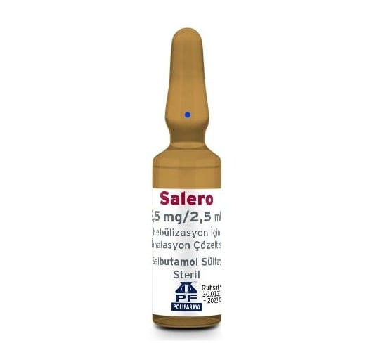

Salero 2,5 mg/2,5 ml Nebülizasyon İçin İnhalasyon Çözeltisi , 20 Adet

Ne için kullanılır
KT · Bölüm 1SALERO etkin madde olarak salbutamol içerir. “Hızlı etkili bronkodilatörler (bronşları genişletici)” adı verilen bir ilaç grubunun üyesidir. SALERO, nebüller normal serum fizyolojik içinde salbutamol çözeltisi içeren cam ampullerdir. Her ampul 2,5 mL çözelti içerir. Ampullerin içinde bulunan sıvı haldeki SALERO “nebülizatör” adı verilen cihaz yardımıyla buhar haline getirilir. Ağızdan solunarak akciğerlere çekilen SALERO hava yollarını genişleterek daha kolay nefes alıp vermenizi sağlar. Astımda bronkokonstriksiyonu (bronşların daralması) azaltarak semptom giderici olarak kullanılan rahatlatıcı ilaçlardır. Kontrol edici ilaç olarak kullanılmamalıdırlar. Kronik obstrüktif (tıkayıcı) akciğer hastalığında (KOAH) belirtileri azaltmak için ve kurtarıcı ilaç olarak kullanılır. Düzenli tedavide tercih edilmez.